Unidad 1: Introducción a la Música
Concepto y Definición
La música es una forma de arte que organiza sonidos y silencios a lo largo del tiempo, creando una experiencia emocional y estética. Es un medio universal de comunicación que trasciende lenguajes y culturas.
Elementos de la Música
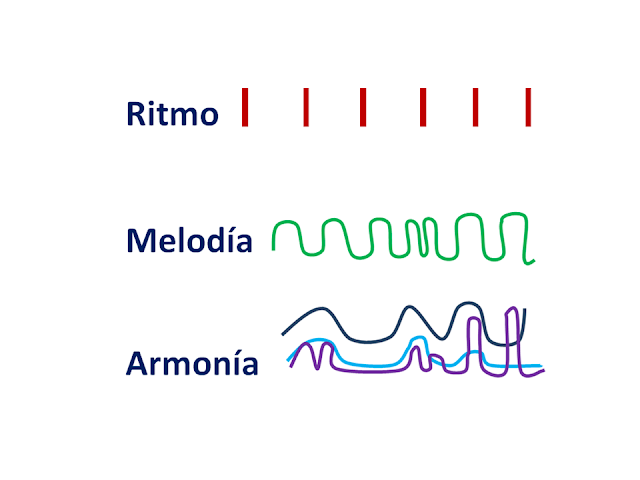Ritmo: Se refiere a la duración de los sonidos y silencios, creando patrones de movimiento en la música. Se mide en pulsos o beats.
Melodia: Es la sucesión de notas que se perciben como una unidad, creando una línea musical. La melodía puede ser simple o compleja, y suele ser la parte más reconocible de una pieza.
Armonia: Involucra la combinación de diferentes notas que se tocan simultáneamente. Proporciona contexto a la melodía.
Timbre: Es la calidad del sonido que permite distinguir diferentes instrumentos o voces.
Dinamica: Se refiere a la intensidad del sonido, es decir, cómo de fuerte o suave es.
Unidad 2: Las Notas Principales
Notas Musicales
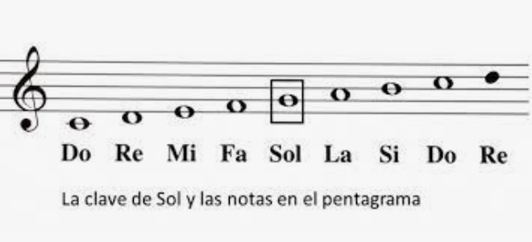Las notas principales en el sistema occidental son: Do, Re, Mi, Fa, Sol, La, Si. Cada nota tiene una frecuencia específica y se puede representar en diferentes octavas.
Sistemas de Notacion
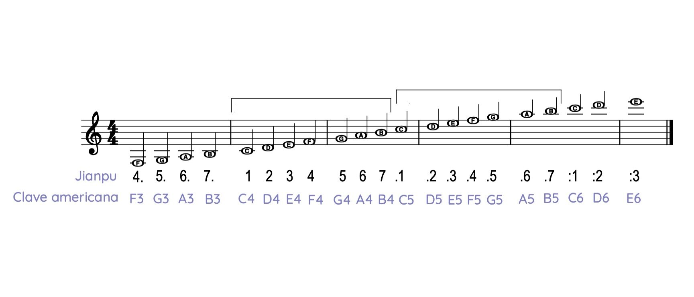Pentagrama: Conjunto de cinco líneas donde se colocan las notas.
Claves: Indican el tono de las notas en el pentagrama, siendo las más comunes la clave de Sol y la clave de Fa.
Notas Musicales
Las notas corresponden a frecuencias específicas (por ejemplo, el La4 es 440 Hz) y se organizan en octavas.
Unidad 3: Definicion de Intervalos
Concepto de Intervalo
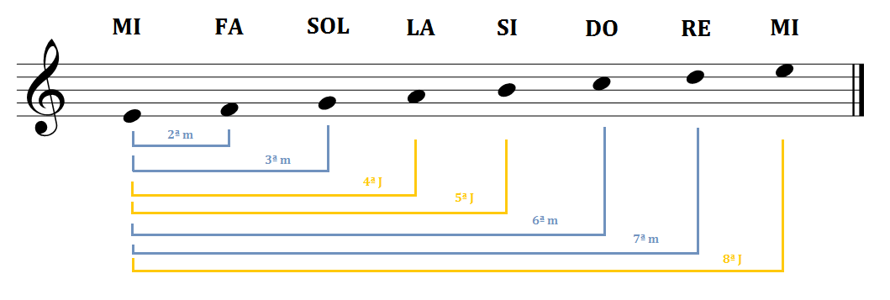Un intervalo es la distancia entre dos notas, que se mide en semitonos. Por ejemplo, el intervalo entre Do y Re es de un tono (dos semitonos).
Tipos de Intervalos
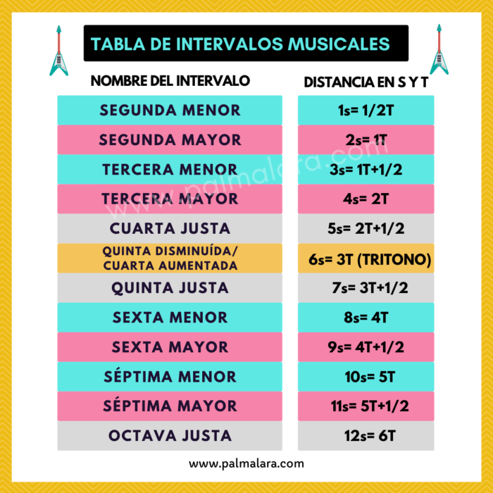Unisono: Ambas notas son la misma.
Segunda: Distancia de un tono.
Tercera: Puede ser mayor (dos tonos) o menor (un tono y medio).
Cuarta: Puede ser justa (dos tonos y un semitono) o aumentada (tres tonos).
Quinta: Justa (tres tonos y un semitono) o disminuida (tres tonos).
Sexta y Septima: Iguales a las anteriores en clasificación.
Unidad 4: Escalas; Modos y Tonalidades
Escalas

Una escala es un conjunto ordenado de notas. Las escalas son la base de la melodía y la armonía.
Escala Mayor: Tono, tono, semitono, tono, tono, tono, semitono.
Escala Menor Natural: Tono, semitono, tono, tono, semitono, tono, tono.
Modos
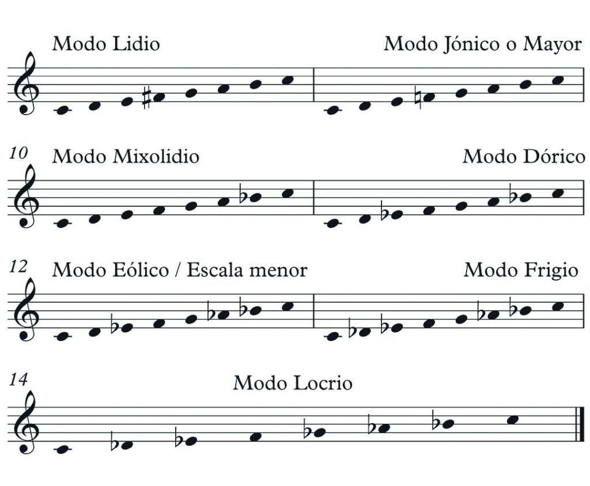Los modos son variaciones de las escalas que comienzan desde diferentes notas.
Jónico: Escala mayor, alegre.
Dórico: Menor con el sexto grado aumentado, melancólico.
Frigio: Menor con el segundo grado disminuido, exótico.
Lidio: Mayor con el cuarto grado aumentado, brillante.
Mixolidio: Mayor con el séptimo grado disminuido, folk.
Eolio: Menor natural, melancólico.
Locrio: Menor con el segundo y quinto grado disminuidos, inestable.
Tonalidades
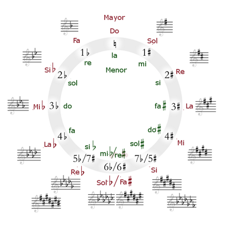La tonalidad organiza las notas en torno a una tónica. Las tonalidades mayor y menor tienen diferentes características emocionales.
Unidad 5: Armonía; Acordes y sus Tipos
Acordes
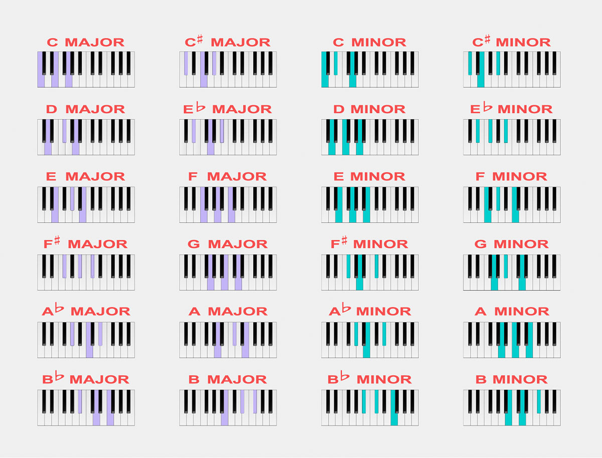Un acorde se forma al combinar al menos tres notas. Los acordes son la base de la armonía.
Tipos de Acordes
Acordes Mayores: Tónica, tercera mayor, quinta justa.
Acordes Menores: Tónica, tercera menor, quinta justa.
Acordes Disminuidos: Tónica, tercera menor, quinta disminuida.
Acordes Aumentados: Tónica, tercera mayor, quinta aumentada.
Función de los Acordes
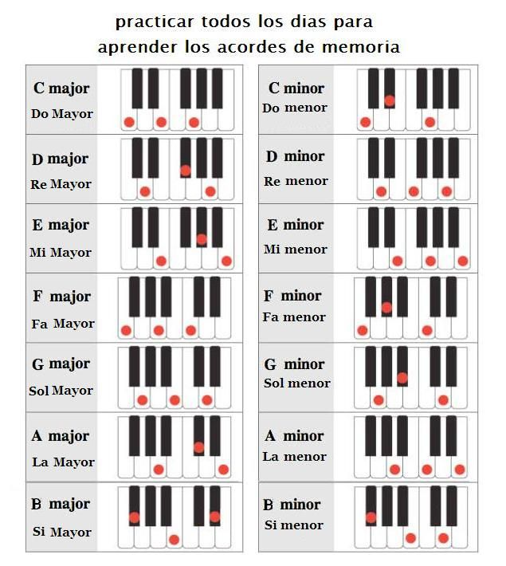Los acordes crean una base armónica que acompaña a la melodía y estructuran la forma de una composición.
Unidad 6: Armonía; Acordes Complejos
Acordes Complejos
Los acordes complejos añaden más notas a los acordes básicos, proporcionando riqueza y textura a la música.
Tipos de Acordes Complejos
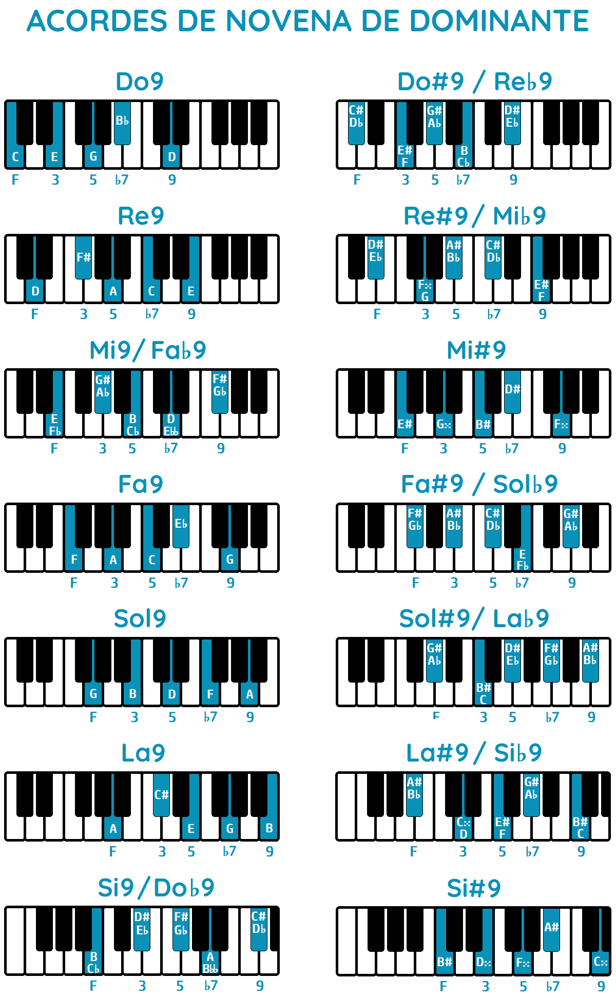Acordes de Séptima: Se añade la séptima a un acorde mayor o menor.
Acordes de Novena: Se añade la novena a un acorde.
Acordes de Undécima: Se añade la undécima.
Acordes de Duodécima: Se añade la duodécima.
Uso de Acordes Complejos
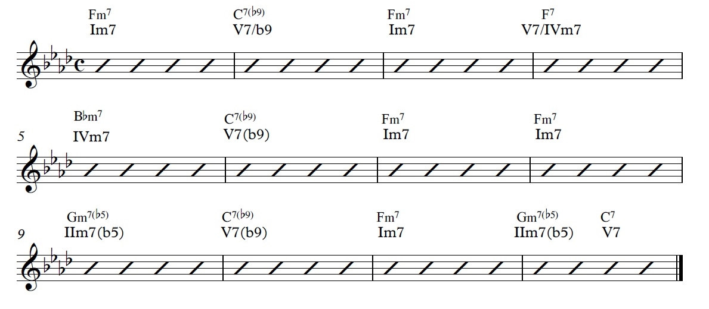Los acordes complejos son comunes en jazz, blues y música contemporánea.
Unidad 7: Modos Griegos
Concepto de Modos Griegos
Los modos griegos son escalas derivadas de la escala mayor que ofrecen diferentes sonoridades.
Descripción de los Modos
Jónico: Escala mayor, alegre.
Dórico: Menor con el sexto grado aumentado, melancólico.
Frigio: Menor con el segundo grado disminuido, exótico.
Lidio: Mayor con el cuarto grado aumentado, brillante.
Mixolidio: Mayor con el séptimo grado disminuido, folk.
Eolio: Menor natural, melancólico.
Locrio: Menor con el segundo y quinto grado disminuidos, inestable.
Unidad 8: Escalas Pentatónicas y Escalas Bluseras
Escalas Pentatónicas
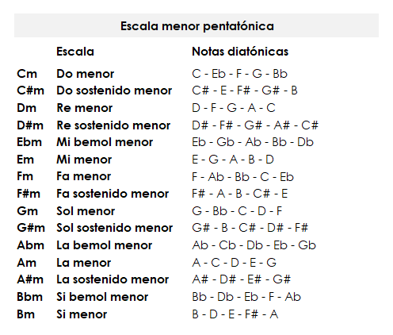La escala pentatónica es una de las escalas más antiguas y universales. Su simplicidad permite una fácil improvisación y composición.
Pentatónica Mayor: Formada por las notas 1, 2, 3, 5 y 6 de la escala mayor.
Pentatónica Menor: Formada por las notas 1, 3, 4, 5 y 7 de la escala menor.
Escalas Bluseras
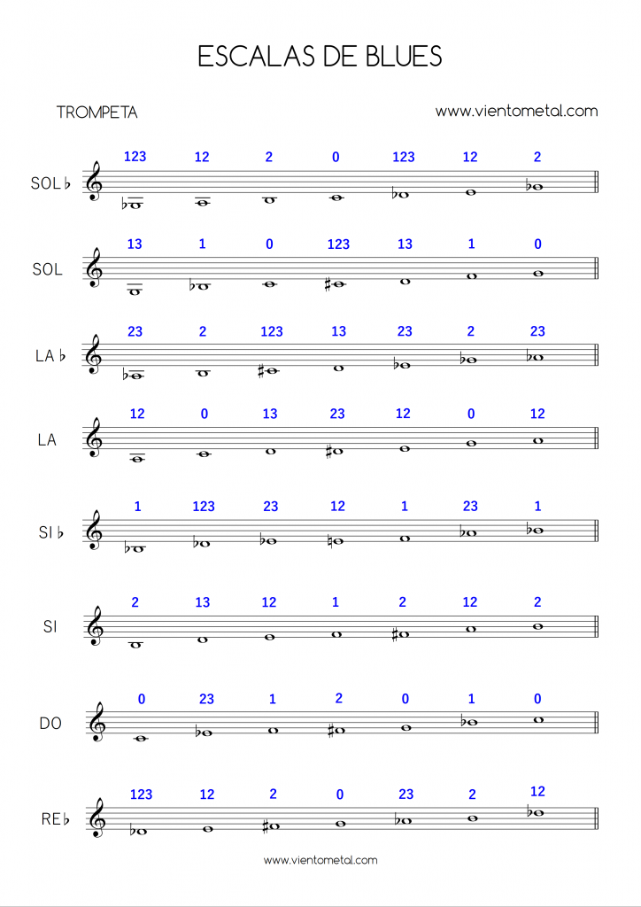La escala blusera se deriva de la escala pentatónica menor, añadiendo una "nota de paso" que le da su característica distintiva.
Escala Blusera: Formada por las notas 1, 3, 4, 5, 6 y 7 (con la 4 aumentada).
Unidad 9: Rítmica y Compases
Rítmica
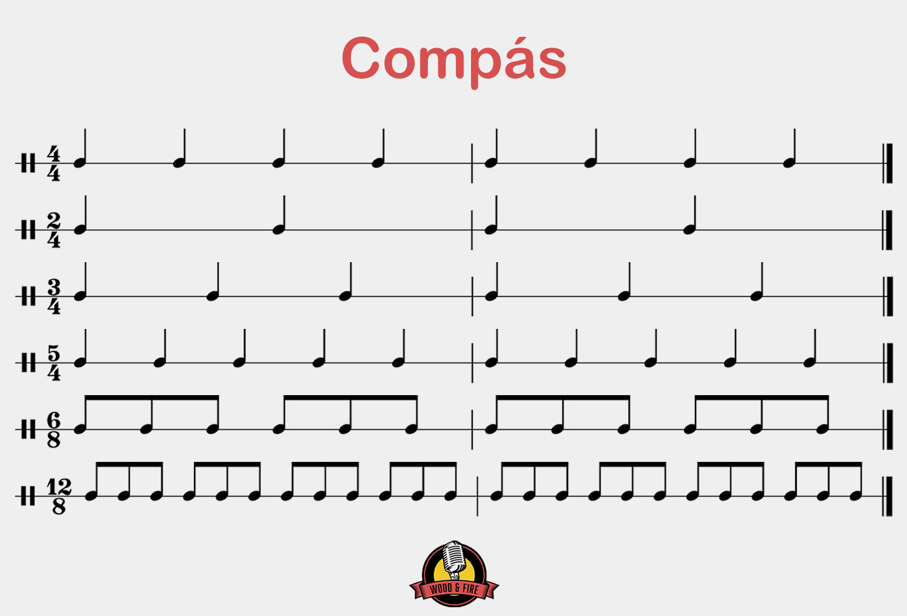La rítmica es la organización del tiempo musical. Es fundamental para la creación de patrones melódicos y armónicos.
Compás: Unidad de medida musical que organiza el tiempo en pulsos. Ejemplo: compás de 4/4.
Tipos de Compases
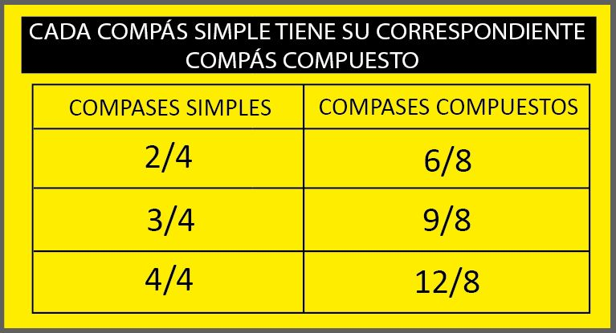Compases Simples: Cada pulso se divide en dos partes.
Compases Compuestos: Cada pulso se divide en tres partes.
Unidad 10: Estructura de Composiciones Musicales
Formas Musicales
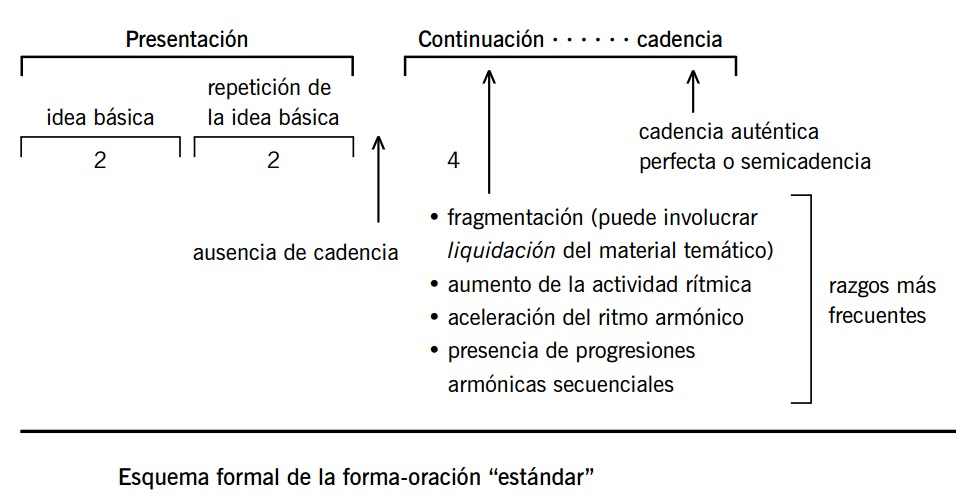La forma musical se refiere a la estructura de una composición. Existen diversas formas, como la sonata, la suite y el rondó.
Forma Binaria: Dos secciones (A-B).
Forma Terciaria: Tres secciones (A-B-A).